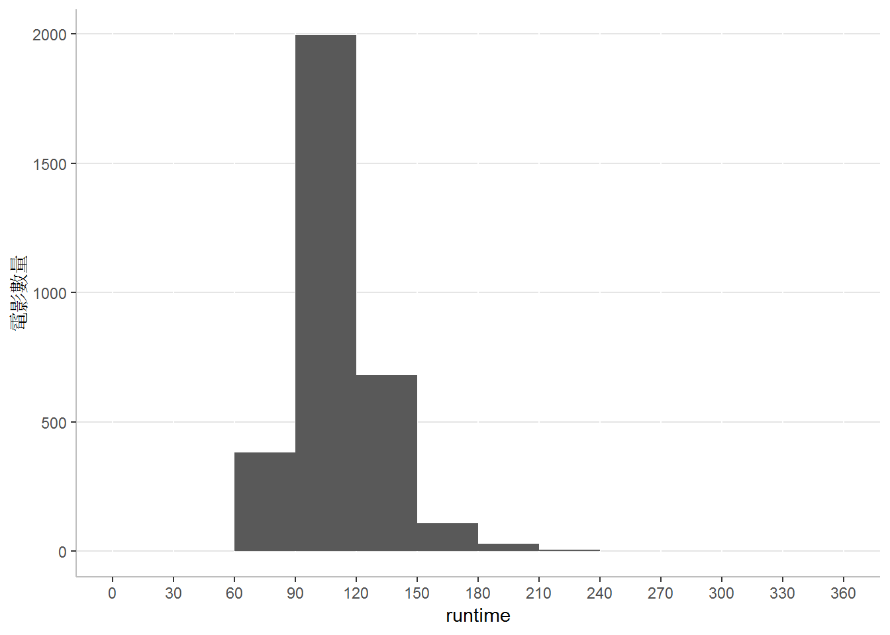
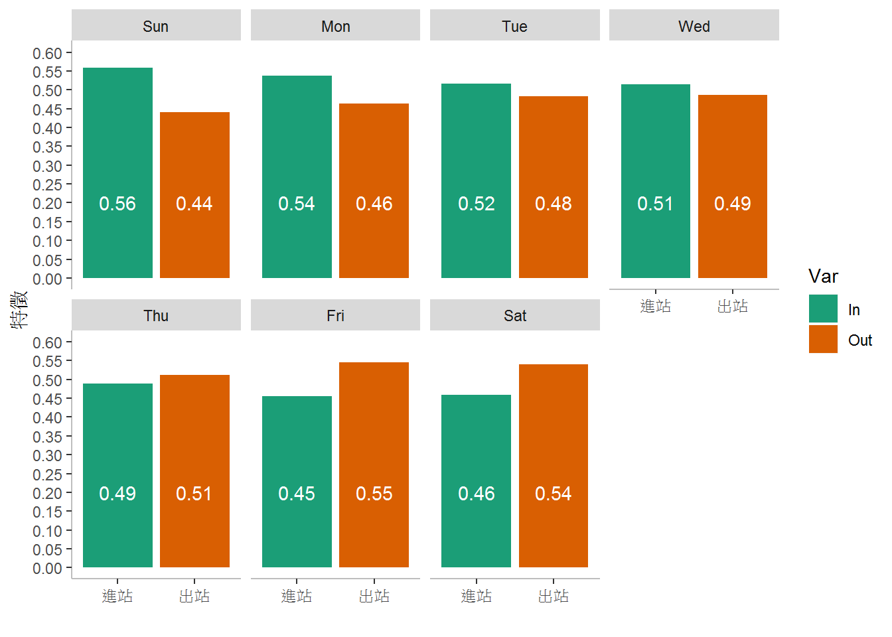
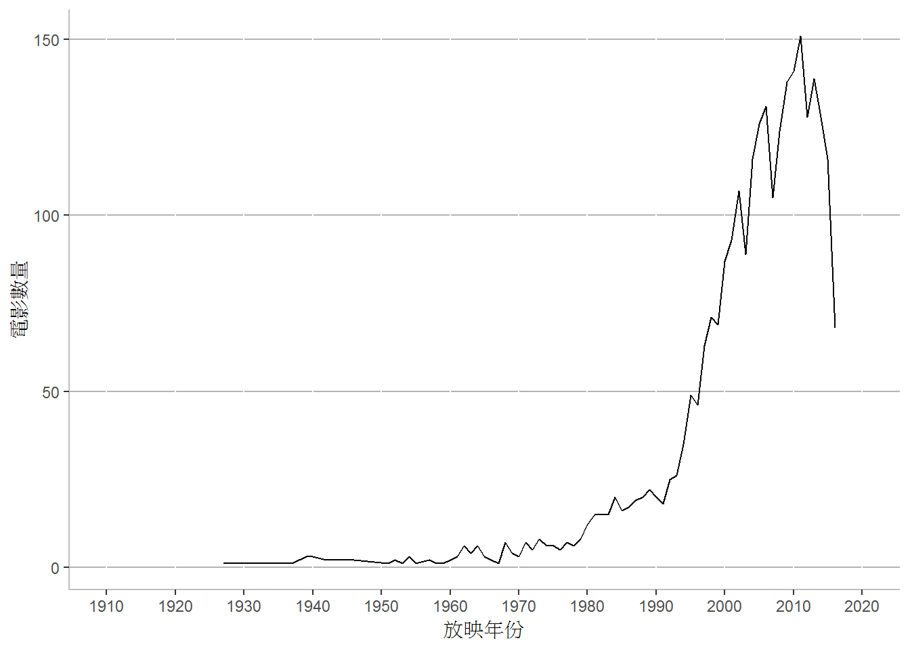

Chapter 8 利用R語言進行監督式機器學習
課程簡介
課程簡介
分類是根據蒐集的資料案例，以訓練演算法建立一個模型，來指定新的資料的類別。本次課程的目的為介紹監督式機器學習中的分類問題，並且以實際案例說明分類問題的資料處理、特徵抽取與運用各種演算法進行分類。本次課程中將利用TMDB電影資料，從片長、類型、製作公司、預算、收入、…等電影資料，預測電影的評分，進行分類的練習。本次課程包含以下的內容：
- 分類演算法的概念與應用
- 資料處理與特徵抽取
- R語言的分類演算法實作
學習目標
8.1 監督式機器學習
監督式機器學習 (supervised machine learning)是利用一組已經標注結果的資料，預測尚未標注結果的新資料的可能結果。以數學的方式來表示這個概念，監督式機器學習利用一組資料 \(X_{1}, X_{2}, ..., X_{N}\) (\(X_{i}\)稱為預測變數或解釋變數)以及其對應的結果 \(Y_{1}, Y_{2}, ..., Y_{N}\) (\(Y_{i}\)稱為目標變數)，設法找到一個模型 \(f(x)\) ，盡可能使 \(f(X_{1}) = Y_{1}\) 、 \(f(X_{2}) = Y_{2}\) 、…、 \(f(X_{N}) = Y_{N}\) 。當有新的資料 \(\hat{X}\) 進入時，可以利用 \(f(x)\) 計算的結果 \(f(\hat{X})\) ，做為可能結果的預測。
通常來說，如果要預測的結果是連續的數值，通常將這類的問題稱為迴歸 (regression)，如果是離散型的結果的話，則稱為分類 (classification)。
8.1.1 分類
分類的問題可以視為運用現有的資料 \(X_{1}, X_{2}, ..., X_{N}\) 以及其對應的類別 \(Y_{1}, Y_{2}, ..., Y_{N}\) ，嘗試找到一個分類器模型 \(f(x)\) 來預測新資料 \(\hat{X}\) 的類別 \(f(\hat{X})\) 。
常用的分類演算法:
- K-Nearest Neighbors演算法
- Naive Bayes 分類演算法
- 支援向量機 (support vector machine)
- 決策樹 (decision tree)
- 隨機森林 (random forest)
- 梯度提升機 (gradient boosting machine)
這些分類演算法各有各的優點，有的容易實作，有的效率高，有的產生的結果容易解釋，有的則是整合其他分類演算法的結果。在應用上，可以依據分類問題的特性進行選擇。
8.2 TMDB電影評分預測
TMDB資料是Kaggle提供做為學習資料科學的資料集。Kaggle利用TMDB (The Movie Database)提供的電影資料建立的資料集，大約有5000筆電影資料，在Kaggle上的下載點為TMDB 5000 Movie Dataset。

本次課程將利用TMDB資料集說明如何應用電影資料(片長、類型、製作公司、預算、收入、…等)，進行監督式機器學習，預測電影評分。可參考Project Report: IMDB 5000 Movie Dataset，有類似的做法。
8.2.1 載入tidyverse套件
載入tidyverse套件
library(tidyverse)8.2.2 讀入資料
讀取TMDB資料集
movies <- read_csv("tmdb_5000_movies.csv")
讀入資料集後，先看資料集的情況。
資料集上各個variable的資料型態
str(movies)## Classes 'spec_tbl_df', 'tbl_df', 'tbl' and 'data.frame': 4803 obs. of 20 variables:
## $ budget : num 2.37e+08 3.00e+08 2.45e+08 2.50e+08 2.60e+08 2.58e+08 2.60e+08 2.80e+08 2.50e+08 2.50e+08 ...
## $ genres : chr "[{\"id\": 28, \"name\": \"Action\"}, {\"id\": 12, \"name\": \"Adventure\"}, {\"id\": 14, \"name\": \"Fantasy\"}"| __truncated__ "[{\"id\": 12, \"name\": \"Adventure\"}, {\"id\": 14, \"name\": \"Fantasy\"}, {\"id\": 28, \"name\": \"Action\"}]" "[{\"id\": 28, \"name\": \"Action\"}, {\"id\": 12, \"name\": \"Adventure\"}, {\"id\": 80, \"name\": \"Crime\"}]" "[{\"id\": 28, \"name\": \"Action\"}, {\"id\": 80, \"name\": \"Crime\"}, {\"id\": 18, \"name\": \"Drama\"}, {\"i"| __truncated__ ...
## $ homepage : chr "http://www.avatarmovie.com/" "http://disney.go.com/disneypictures/pirates/" "http://www.sonypictures.com/movies/spectre/" "http://www.thedarkknightrises.com/" ...
## $ id : num 19995 285 206647 49026 49529 ...
## $ keywords : chr "[{\"id\": 1463, \"name\": \"culture clash\"}, {\"id\": 2964, \"name\": \"future\"}, {\"id\": 3386, \"name\": \""| __truncated__ "[{\"id\": 270, \"name\": \"ocean\"}, {\"id\": 726, \"name\": \"drug abuse\"}, {\"id\": 911, \"name\": \"exotic "| __truncated__ "[{\"id\": 470, \"name\": \"spy\"}, {\"id\": 818, \"name\": \"based on novel\"}, {\"id\": 4289, \"name\": \"secr"| __truncated__ "[{\"id\": 849, \"name\": \"dc comics\"}, {\"id\": 853, \"name\": \"crime fighter\"}, {\"id\": 949, \"name\": \""| __truncated__ ...
## $ original_language : chr "en" "en" "en" "en" ...
## $ original_title : chr "Avatar" "Pirates of the Caribbean: At World's End" "Spectre" "The Dark Knight Rises" ...
## $ overview : chr "In the 22nd century, a paraplegic Marine is dispatched to the moon Pandora on a unique mission, but becomes tor"| __truncated__ "Captain Barbossa, long believed to be dead, has come back to life and is headed to the edge of the Earth with W"| __truncated__ "A cryptic message from Bond’s past sends him on a trail to uncover a sinister organization. While M battles pol"| __truncated__ "Following the death of District Attorney Harvey Dent, Batman assumes responsibility for Dent's crimes to protec"| __truncated__ ...
## $ popularity : num 150.4 139.1 107.4 112.3 43.9 ...
## $ production_companies: chr "[{\"name\": \"Ingenious Film Partners\", \"id\": 289}, {\"name\": \"Twentieth Century Fox Film Corporation\", \"| __truncated__ "[{\"name\": \"Walt Disney Pictures\", \"id\": 2}, {\"name\": \"Jerry Bruckheimer Films\", \"id\": 130}, {\"name"| __truncated__ "[{\"name\": \"Columbia Pictures\", \"id\": 5}, {\"name\": \"Danjaq\", \"id\": 10761}, {\"name\": \"B24\", \"id\": 69434}]" "[{\"name\": \"Legendary Pictures\", \"id\": 923}, {\"name\": \"Warner Bros.\", \"id\": 6194}, {\"name\": \"DC E"| __truncated__ ...
## $ production_countries: chr "[{\"iso_3166_1\": \"US\", \"name\": \"United States of America\"}, {\"iso_3166_1\": \"GB\", \"name\": \"United Kingdom\"}]" "[{\"iso_3166_1\": \"US\", \"name\": \"United States of America\"}]" "[{\"iso_3166_1\": \"GB\", \"name\": \"United Kingdom\"}, {\"iso_3166_1\": \"US\", \"name\": \"United States of America\"}]" "[{\"iso_3166_1\": \"US\", \"name\": \"United States of America\"}]" ...
## $ release_date : Date, format: "2009-12-10" "2007-05-19" ...
## $ revenue : num 2.79e+09 9.61e+08 8.81e+08 1.08e+09 2.84e+08 ...
## $ runtime : num 162 169 148 165 132 139 100 141 153 151 ...
## $ spoken_languages : chr "[{\"iso_639_1\": \"en\", \"name\": \"English\"}, {\"iso_639_1\": \"es\", \"name\": \"Espa\\u00f1ol\"}]" "[{\"iso_639_1\": \"en\", \"name\": \"English\"}]" "[{\"iso_639_1\": \"fr\", \"name\": \"Fran\\u00e7ais\"}, {\"iso_639_1\": \"en\", \"name\": \"English\"}, {\"iso_"| __truncated__ "[{\"iso_639_1\": \"en\", \"name\": \"English\"}]" ...
## $ status : chr "Released" "Released" "Released" "Released" ...
## $ tagline : chr "Enter the World of Pandora." "At the end of the world, the adventure begins." "A Plan No One Escapes" "The Legend Ends" ...
## $ title : chr "Avatar" "Pirates of the Caribbean: At World's End" "Spectre" "The Dark Knight Rises" ...
## $ vote_average : num 7.2 6.9 6.3 7.6 6.1 5.9 7.4 7.3 7.4 5.7 ...
## $ vote_count : num 11800 4500 4466 9106 2124 ...
## - attr(*, "spec")=
## .. cols(
## .. budget = col_double(),
## .. genres = col_character(),
## .. homepage = col_character(),
## .. id = col_double(),
## .. keywords = col_character(),
## .. original_language = col_character(),
## .. original_title = col_character(),
## .. overview = col_character(),
## .. popularity = col_double(),
## .. production_companies = col_character(),
## .. production_countries = col_character(),
## .. release_date = col_date(format = ""),
## .. revenue = col_double(),
## .. runtime = col_double(),
## .. spoken_languages = col_character(),
## .. status = col_character(),
## .. tagline = col_character(),
## .. title = col_character(),
## .. vote_average = col_double(),
## .. vote_count = col_double()
## .. )資料集上各個variable的統計描述資訊
summary(movies)## budget genres homepage
## Min. : 0 Length:4803 Length:4803
## 1st Qu.: 790000 Class :character Class :character
## Median : 15000000 Mode :character Mode :character
## Mean : 29045040
## 3rd Qu.: 40000000
## Max. :380000000
##
## id keywords original_language original_title
## Min. : 5 Length:4803 Length:4803 Length:4803
## 1st Qu.: 9014 Class :character Class :character Class :character
## Median : 14629 Mode :character Mode :character Mode :character
## Mean : 57166
## 3rd Qu.: 58611
## Max. :459488
##
## overview popularity production_companies
## Length:4803 Min. : 0.000 Length:4803
## Class :character 1st Qu.: 4.668 Class :character
## Mode :character Median : 12.922 Mode :character
## Mean : 21.492
## 3rd Qu.: 28.314
## Max. :875.581
##
## production_countries release_date revenue
## Length:4803 Min. :1916-09-04 Min. :0.000e+00
## Class :character 1st Qu.:1999-07-14 1st Qu.:0.000e+00
## Mode :character Median :2005-10-03 Median :1.917e+07
## Mean :2002-12-27 Mean :8.226e+07
## 3rd Qu.:2011-02-16 3rd Qu.:9.292e+07
## Max. :2017-02-03 Max. :2.788e+09
## NA's :1
## runtime spoken_languages status tagline
## Min. : 0.0 Length:4803 Length:4803 Length:4803
## 1st Qu.: 94.0 Class :character Class :character Class :character
## Median :103.0 Mode :character Mode :character Mode :character
## Mean :106.9
## 3rd Qu.:118.0
## Max. :338.0
## NA's :2
## title vote_average vote_count
## Length:4803 Min. : 0.000 Min. : 0.0
## Class :character 1st Qu.: 5.600 1st Qu.: 54.0
## Mode :character Median : 6.200 Median : 235.0
## Mean : 6.092 Mean : 690.2
## 3rd Qu.: 6.800 3rd Qu.: 737.0
## Max. :10.000 Max. :13752.0
## 8.3 資料處理與特徵抽取
8.3.1 資料的清除與整理
整理各個variable，分為以下四類
- 電影編號：id
- 與本次分析無關者：homepage, keywords, original_title, overview, production_countries, spoken_languages, status, tagline, title
- 數值資料類型：budget, popularity, revenue, runtime, vote_average, vote_count
- 日期資料類型：release_date
- 簡單字串資料類型：original_language
- 複雜字串資料類型：genres, production_companies
處理與本次分析無關的variables
與本次分析無關的variables，不需進一步分析，可以直接捨棄。
movies <- movies %>%
select(-homepage, -keywords, -original_title, -overview, -production_countries, -spoken_languages, -status, -tagline, -title)捨棄這些variables後，資料集從20個variables，轉換為11個variables。
整理數值資料類型的variables
觀察每個數值資料的範圍
movies %>%
select(budget, popularity, revenue, runtime, vote_average, vote_count) %>%
summary()## budget popularity revenue runtime
## Min. : 0 Min. : 0.000 Min. :0.000e+00 Min. : 0.0
## 1st Qu.: 790000 1st Qu.: 4.668 1st Qu.:0.000e+00 1st Qu.: 94.0
## Median : 15000000 Median : 12.922 Median :1.917e+07 Median :103.0
## Mean : 29045040 Mean : 21.492 Mean :8.226e+07 Mean :106.9
## 3rd Qu.: 40000000 3rd Qu.: 28.314 3rd Qu.:9.292e+07 3rd Qu.:118.0
## Max. :380000000 Max. :875.581 Max. :2.788e+09 Max. :338.0
## NA's :2
## vote_average vote_count
## Min. : 0.000 Min. : 0.0
## 1st Qu.: 5.600 1st Qu.: 54.0
## Median : 6.200 Median : 235.0
## Mean : 6.092 Mean : 690.2
## 3rd Qu.: 6.800 3rd Qu.: 737.0
## Max. :10.000 Max. :13752.0
## budget(預算)、revenue(收入)、runtime(放映時間)、vote_count(投票人數)等為0並不合理，首先刪除這些資料為0者
movies <- movies %>%
filter(budget>0 & revenue>0 & runtime>0 & vote_count>0)再觀察每個數值資料的範圍
movies %>%
select(budget, popularity, revenue, runtime, vote_average, vote_count) %>%
summary()## budget popularity revenue runtime
## Min. : 1 Min. : 0.02 Min. :5.000e+00 Min. : 41.0
## 1st Qu.: 10500000 1st Qu.: 10.48 1st Qu.:1.704e+07 1st Qu.: 96.0
## Median : 25000000 Median : 20.42 Median :5.520e+07 Median :107.0
## Mean : 40678774 Mean : 29.05 Mean :1.213e+08 Mean :110.7
## 3rd Qu.: 55000000 3rd Qu.: 37.35 3rd Qu.:1.464e+08 3rd Qu.:121.0
## Max. :380000000 Max. :875.58 Max. :2.788e+09 Max. :338.0
## vote_average vote_count
## Min. :2.300 Min. : 1.0
## 1st Qu.:5.800 1st Qu.: 178.0
## Median :6.300 Median : 471.0
## Mean :6.313 Mean : 977.9
## 3rd Qu.:6.900 3rd Qu.: 1148.0
## Max. :8.500 Max. :13752.0budget最小為1 ，看起來仍然不合理。顯示budget少於10000的電影共幾筆？
print(paste("budget少於10000的電影數量：", nrow(movies[movies$budget<10000,])))## [1] "budget少於10000的電影數量： 15"刪除budget少於10000的電影
movies <- movies %>%
filter(budget>=10000)收入太少，也不正常，顯示revenue少於10000的電影共幾筆？
print(paste("revenue少於10000的電影數量：", nrow(movies[movies$revenue<10000,])))## [1] "revenue少於10000的電影數量： 8"再刪除revenue少於10000的電影
movies <- movies %>%
filter(revenue>=10000)分析runtime的分布情形
summary(movies$runtime)## Min. 1st Qu. Median Mean 3rd Qu. Max.
## 41.0 96.0 107.0 110.8 121.0 338.0畫成直方圖看看
movies %>%
ggplot() +
geom_histogram(aes(x=runtime), breaks=seq(0, 360, 30)) +
scale_x_continuous(breaks=seq(0, 360, 30), minor_breaks = NULL) +
labs(y="電影數量") +
theme(panel.background = element_blank(),
axis.line = element_line(color="grey"),
panel.grid.major.y = element_line(color="grey90"))
刪除runtime小於60分鐘的電影
movies <- movies %>%
filter(runtime>=60)最後分析vote_count，由於我們希望預測電影的評分資料，如果評分人數太少，評分可能較不準確。顯示vote_count少於100的電影共幾筆？
print(paste("vote_count少於100的電影數量：", nrow(movies[movies$vote_count<100,])))## [1] "vote_count少於100的電影數量： 496"再刪除vote_count少於100的電影
movies <- movies %>%
filter(vote_count>=100)我們要預測的目標是平均評分vote_average，檢視這個variable的分布情形。
movies %>%
ggplot() +
geom_histogram(aes(x=vote_average), breaks=seq(0, 10, 0.5)) +
scale_x_continuous(breaks=seq(0, 10, 0.5), minor_breaks = NULL) +
labs(x="vote_average區間", y="電影數量") +
theme(panel.background = element_blank(),
axis.line=element_line(color="grey"),
panel.grid.major.y = element_line(color="grey90"),
axis.text.x = element_text(angle=60, hjust=1))
從上面的圖形可以發現資料分布在2.5到8.5之間 根據vote_average的分布情形，決定將這個variable分為\(x\leq5.5\), \(5.5<x\leq6.5\), \(6.5<x\leq7.5\)以及\(7.5<x\)等四個區間，將vote_average改為新的變數vote_average_p，做為接下來預測的目標。也就是以其他的variables來預測vote_average_p在哪一個區間(類別)。
movies <- movies %>%
mutate(vote_average_p=cut(vote_average, breaks=c(0, 5.5, 6.5, 7.5, 10)))## Warning: The `printer` argument is deprecated as of rlang 0.3.0.
## This warning is displayed once per session.檢視各類別內的資料數量
movies %>%
group_by(vote_average_p) %>%
summarise(count=n()) %>%
mutate(ratio=count/sum(count)) %>%
ggplot() +
geom_col(aes(x=vote_average_p, y=ratio)) +
labs(x="vote_average_p類別", y="電影數量比率") +
theme(panel.background = element_blank(),
axis.line=element_line(color="grey"),
panel.grid.major.y = element_line(color="grey90"))
捨棄vote_count和vote_average兩個variables
movies <- movies %>%
select(-vote_count, -vote_average)修改日期資料類型的variables成factor資料類型，然後轉換成one-hot encoding的形式
說明：
因為輸入分類的variables最好是numeric，而且資料的分布比較平均比較好。因此先將日期資料型態改成factor資料型態，再轉變成one-hot encoding的形式。
one-hot encoding適用於名目或順序尺度的variables。對於某一個名目或順序尺度的variables，如果它有m個可能值，那麼經過one-hot encoding碼後，就變成了m個二元variables(0或1)。每一個二元variable表示原先的variable的一種可能值。例如，某一個variable(稱為light)的可能值為“red”、“yellow”和“green”，將light經過one-hot encoding後，將會產生3個二元variables(red、yellow和green)。如果某一個observation在light上的值是“red”，經過one-hot encoding後，這個observation在red上的值為1，yellow和green則都是0。
分析release_date，因為其資料型態是Date，所以載入日期時間處理套件
library(lubridate)觀察release_date的分布情形
summary(movies$release_date)## Min. 1st Qu. Median Mean 3rd Qu.
## "1927-01-10" "1999-07-14" "2006-03-06" "2003-05-31" "2011-05-14"
## Max.
## "2016-09-09"從1927年到2016年，最早期的電影數較少
查看每年的上映電影數
movies %>%
mutate(release_year=year(release_date)) %>%
group_by(release_year) %>%
summarise(count=n()) %>%
ggplot() +
geom_line(aes(x=release_year, y=count)) +
scale_x_continuous(limits=c(1910, 2020), breaks=seq(1910, 2020, 10)) +
labs(x="放映年份", y="電影數量") +
theme(panel.background = element_blank(),
panel.grid.major.y = element_line(color="grey70"),
axis.line = element_line(color="grey"))
以放映年份取代放映日期，並分為1990年前、1991-2000年、2001-2010年與2011年後等四個區間，便於之後的分析
movies <- movies %>%
mutate(release_year=year(release_date)) %>%
mutate(release_year=cut(release_year, breaks=c(1900, 1990, 2000, 2010, 2020), labels=c("before1990", "between1991_2000", "between2001_2010", "after2011")))檢視各類別內的資料數量
movies %>%
group_by(release_year) %>%
summarise(count=n()) %>%
mutate(ratio=count/sum(count)) %>%
ggplot() +
geom_col(aes(x=release_year, y=ratio)) +
labs(x="出品年代", y="電影數量比率") +
theme(panel.background = element_blank(),
axis.line=element_line(color="grey"),
panel.grid.major.y = element_line(color="grey90"),
axis.text.x = element_text(angle=30, hjust=1))
將release_year改為one-hot encoding的形式
movies_year <- movies %>%
select(id, release_year) %>%
mutate(value=1) %>%
spread(key=release_year, value=value, fill=0)合併兩個data frame，捨棄release_date和release_year兩個variables
movies <- movies %>%
left_join(movies_year) %>%
select(-release_date, -release_year)## Joining, by = "id"移除movies_year
remove(movies_year)處理簡單字串類型的variables
簡單字串資料類型與複雜資料的差別是前者的資料格式較單純，簡單字串資料類型只有一個variable：original_language。
分析original_language
movies %>%
group_by(original_language) %>%
summarise(count=n()) %>%
mutate(proportion=count/sum(count)) %>%
arrange(desc(proportion))## # A tibble: 24 x 3
## original_language count proportion
## <chr> <int> <dbl>
## 1 en 2615 0.966
## 2 fr 18 0.00665
## 3 es 13 0.00480
## 4 ja 10 0.00370
## 5 de 8 0.00296
## 6 zh 8 0.00296
## 7 it 5 0.00185
## 8 cn 4 0.00148
## 9 ko 4 0.00148
## 10 da 3 0.00111
## # ... with 14 more rows可以發現雖然original_language中有許多可能的值，也就是收錄許多語言的電影，但絕大部分是英語片(96.64%)，因此捨棄這個variable
movies <- movies %>%
select(-original_language)分析production_companies
movies$pc_data <- sapply(movies$production_companies, valueExtract)將電影的每一個production_companies展開
movies_pc <- movies %>%
select(id, pc_data) %>%
mutate(pc_data=strsplit(pc_data, split="%")) %>%
unnest(pc_data) %>%
mutate(value=1)統計電影製作公司與他們製作的電影數 (按電影數排名)
production_companies <- movies_pc %>%
group_by(pc_data) %>%
summarise(count=n()) %>%
arrange(desc(count))製作電影數前100的電影製作公司
top100pc <- production_companies %>%
slice(1:100) %>%
pull(pc_data)電影的製作公司包含幾家前100製作公司
movies_pc <- movies_pc %>%
mutate(value=ifelse(pc_data %in% top100pc, 1, 0)) %>%
group_by(id) %>%
summarise(top_pc_number=sum(value))將電影的製作公司包含前100製作公司的數量與movies合併，捨棄production_companies和pc_data兩個variables，並且將top_pc_number的NA值改為0。
movies <- movies %>%
left_join(movies_pc) %>%
select(-production_companies, -pc_data) %>%
mutate(top_pc_number=ifelse(is.na(top_pc_number), 0, top_pc_number))## Joining, by = "id"繪製電影的知名製作公司數量分布情形
movies %>%
mutate(top_pc_number=factor(top_pc_number)) %>%
group_by(top_pc_number) %>%
summarise(count=n()) %>%
mutate(ratio=count/sum(count)) %>%
ggplot() +
geom_col(aes(x=top_pc_number, y=ratio)) +
labs(x="包含知名製作公司數", y="電影數量比率") +
theme(panel.background = element_blank(),
panel.grid.major.y = element_line(color="grey90"),
axis.line = element_line(color="grey"))移除movies_pc、production_companies和top100pc
remove(movies_pc)
remove(production_companies)
remove(top100pc)在進行資料探勘前，最後再檢視一次movies
summary(movies)## budget id popularity
## Min. : 10000 Min. : 5 Min. : 1.552
## 1st Qu.: 14000000 1st Qu.: 2988 1st Qu.: 14.982
## Median : 30000000 Median : 10581 Median : 24.910
## Mean : 45745024 Mean : 46166 Mean : 33.773
## 3rd Qu.: 60000000 3rd Qu.: 49025 3rd Qu.: 41.502
## Max. :380000000 Max. :417859 Max. :875.581
## revenue runtime vote_average_p before1990
## Min. :2.200e+04 Min. : 63.0 (0,5.5] : 423 Min. :0.0000
## 1st Qu.:3.004e+07 1st Qu.: 97.0 (5.5,6.5]:1131 1st Qu.:0.0000
## Median :7.582e+07 Median :107.0 (6.5,7.5]: 952 Median :0.0000
## Mean :1.423e+08 Mean :111.2 (7.5,10] : 200 Mean :0.1171
## 3rd Qu.:1.701e+08 3rd Qu.:122.0 3rd Qu.:0.0000
## Max. :2.788e+09 Max. :248.0 Max. :1.0000
## between1991_2000 between2001_2010 after2011 g_Action
## Min. :0.0000 Min. :0.0000 Min. :0.0000 Min. :0.0000
## 1st Qu.:0.0000 1st Qu.:0.0000 1st Qu.:0.0000 1st Qu.:0.0000
## Median :0.0000 Median :0.0000 Median :0.0000 Median :0.0000
## Mean :0.1807 Mean :0.4324 Mean :0.2698 Mean :0.3012
## 3rd Qu.:0.0000 3rd Qu.:1.0000 3rd Qu.:1.0000 3rd Qu.:1.0000
## Max. :1.0000 Max. :1.0000 Max. :1.0000 Max. :1.0000
## g_Adventure g_Animation g_Comedy g_Crime
## Min. :0.0000 Min. :0.00000 Min. :0.0000 Min. :0.0000
## 1st Qu.:0.0000 1st Qu.:0.00000 1st Qu.:0.0000 1st Qu.:0.0000
## Median :0.0000 Median :0.00000 Median :0.0000 Median :0.0000
## Mean :0.2251 Mean :0.06319 Mean :0.3359 Mean :0.1704
## 3rd Qu.:0.0000 3rd Qu.:0.00000 3rd Qu.:1.0000 3rd Qu.:0.0000
## Max. :1.0000 Max. :1.00000 Max. :1.0000 Max. :1.0000
## g_Documentary g_Drama g_Family g_Fantasy
## Min. :0.000000 Min. :0.0000 Min. :0.0000 Min. :0.0000
## 1st Qu.:0.000000 1st Qu.:0.0000 1st Qu.:0.0000 1st Qu.:0.0000
## Median :0.000000 Median :0.0000 Median :0.0000 Median :0.0000
## Mean :0.004804 Mean :0.4202 Mean :0.1186 Mean :0.1183
## 3rd Qu.:0.000000 3rd Qu.:1.0000 3rd Qu.:0.0000 3rd Qu.:0.0000
## Max. :1.000000 Max. :1.0000 Max. :1.0000 Max. :1.0000
## g_History g_Horror g_Music g_Mystery
## Min. :0.00000 Min. :0.0000 Min. :0.00000 Min. :0.00000
## 1st Qu.:0.00000 1st Qu.:0.0000 1st Qu.:0.00000 1st Qu.:0.00000
## Median :0.00000 Median :0.0000 Median :0.00000 Median :0.00000
## Mean :0.04028 Mean :0.1153 Mean :0.02772 Mean :0.08832
## 3rd Qu.:0.00000 3rd Qu.:0.0000 3rd Qu.:0.00000 3rd Qu.:0.00000
## Max. :1.00000 Max. :1.0000 Max. :1.00000 Max. :1.00000
## g_Romance g_Science_Fiction g_Thriller g_War
## Min. :0.000 Min. :0.0000 Min. :0.0000 Min. :0.00000
## 1st Qu.:0.000 1st Qu.:0.0000 1st Qu.:0.0000 1st Qu.:0.00000
## Median :0.000 Median :0.0000 Median :0.0000 Median :0.00000
## Mean :0.163 Mean :0.1467 Mean :0.3123 Mean :0.03437
## 3rd Qu.:0.000 3rd Qu.:0.0000 3rd Qu.:1.0000 3rd Qu.:0.00000
## Max. :1.000 Max. :1.0000 Max. :1.0000 Max. :1.00000
## g_Western top_pc_number
## Min. :0.00000 Min. :0.000
## 1st Qu.:0.00000 1st Qu.:1.000
## Median :0.00000 Median :1.000
## Mean :0.01441 Mean :1.371
## 3rd Qu.:0.00000 3rd Qu.:2.000
## Max. :1.00000 Max. :8.000捨棄variable id
movies <- movies %>%
select(-id)除了vote_average_p為目標變數外，其餘的變數都為預測變數。
8.3.2 轉換資料為有效描述和預測的特徵
載入套件
library(caret)建立訓練資料與測試資料
將TMDB電影資料分為訓練集與測試集，訓練資料用來訓練各種分類器，測試資料比較各種分類器的成效。
# Generate random seed
sd <- round(second(Sys.time())*100)
set.seed(sd)
# Step 1: Get row numbers for the training data
trainRowNumbers <- createDataPartition(movies$vote_average_p, p=0.8, list=FALSE)
# Step 2: Create the training dataset
train_set <- movies[trainRowNumbers,]
# Step 3: Create the test dataset
test_set <- movies[-trainRowNumbers,]調整每個variable的值，前四個variables(budget, popularity, revenue, run_time)根據平均數和標準差進行調整，最後一個variable(top_pc_number)調整為0與1之間
# 以訓練資料集，產生調整參數 (平均數和標準差)
preprocessParams_1 <- preProcess(train_set[,1:4], method=c("center", "scale"))
# 調整訓練資料集
train_set[,1:4] <- predict(preprocessParams_1, train_set[,1:4])
# 調整測試資料集
test_set[,1:4] <- predict(preprocessParams_1, test_set[,1:4])
# 以訓練資料集，產生調整參數 (range:全距，調整為0~1之間的數值)
preprocessParams_2 <- preProcess(train_set[,ncol(train_set)], method=c("range"))
# 調整訓練資料集
train_set[,ncol(train_set)] <- predict(preprocessParams_2, train_set[,ncol(train_set)])
# 調整測試資料集
test_set[,ncol(train_set)] <- predict(preprocessParams_2, test_set[,ncol(train_set)])移除調整參數
remove(preprocessParams_1)
remove(preprocessParams_2)移除random seed和訓練集編號
remove(sd)
remove(trainRowNumbers)8.3.3 建立一個data frame用來比較各種分類演算法
classifier_comp <- data.frame(method=character(0),
result=double(0))8.4 進行K-Nearest Neightbors分類
K-Nearest Neightbors分類演算法(以下簡稱KNN)，是最直覺的分類演算法。有別於其他監督式機器學習的分類演算法，KNN不需要先利用已經知道類別的資料訓練預測模型，其主要的概念是將要預測的資料與已經知道類別的資料進行比對，找出最相似的K個候選資料(因此稱為K-Nearest Neighbors)，然後對這K個資料統計每個類別的數量，以多數決的方式決定要預測的資料類別。
KNN雖然概念簡單，但還有不錯的結果。因此，常常用來作為其他分類演算法的比較基準。
FNN套件提供KNN分類演算法。安裝後，載入套件
library(FNN)首先找出在訓練資料集中最佳的K值，也就是以多少個候選資料來預測會有較大的準確度。此處以交互驗證(cross validation, cv)的方式，找出K為x時，KNN的準確度，然後選取準確度最大的x，做為K。cv是將資料分成多個部分，每一次取出一個部分當做測試資料，以其他部分作為訓練資料，建立預測模型，預測測試資料的結果，估算這個模型的準確度。然後，再取出未曾測試的另一部份資料做為測試資料，以其他部分做為訓練資料，估算準確度。反覆多次，最後將所有獲得的準確度進行平均，做為準確度的估計值。
test_k <- function (x) {
train_res <- knn.cv(subset(train_set, select=-vote_average_p),
cl=train_set$vote_average_p, k = x)
acc <- confusionMatrix(train_res, train_set$vote_average_p)
return(acc$overall[1])
}從K=1到20分別測試，找出最大準確度的K值。
accu <- sapply(1:20, test_k)計算測試資料集的準確度
knn_res <- knn(subset(train_set, select=-vote_average_p),
subset(test_set, select=-vote_average_p),
cl=train_set$vote_average_p, k=which.max(accu))
acc <- confusionMatrix(knn_res, test_set$vote_average_p)$overall[1]
classifier_comp <- classifier_comp %>%
add_row(method="KNN", result=round(acc*100, 2))移除KNN計算時的暫存變數
remove(accu)
remove(knn_res)8.5 進行Naive Bayes演算法分類
Naive Bayes分類演算法(簡稱NB)是利用Bayes Theorem(貝氏定理)，根據資料特徵計算該資料屬於各類別的機率，以機率最大者做為預測之結果。在這個方法中，首先以訓練資料集建立預測模型(也就是各特徵對於分類的重要性)，然後針對測試資料集的每一筆資料，根據其特徵進行預測。這個方法相當依賴資料特徵的好壞。
安裝NB分類法的套件naivebayes之後，載入該套件
library(naivebayes)因為資料特徵中有許多重覆的或是不重要的資訊，因此利用利用caret套件的pca (principal component analysis)，先將原先的資料特徵轉換成為比較小維度的特徵
preprocessParams <- train_set %>%
select(-vote_average_p) %>%
as.matrix() %>%
preProcess(method = "pca", thresh = 0.8)調整訓練資料集的資料特徵
# 調整訓練資料集
train_fea <- train_set %>%
select(-vote_average_p) %>%
as.matrix()
train_set1 <- predict(preprocessParams, train_fea) %>%
as.data.frame() %>%
mutate(vote_average_p=train_set$vote_average_p)以訓練資料集訓練預測模型
NB_model <- naive_bayes(vote_average_p ~ .,
usekernel=TRUE, data=train_set1)進行測試
# 調整測試資料集
test_fea <- test_set %>%
select(-vote_average_p) %>%
as.matrix()
test_set1 <- predict(preprocessParams, test_fea) %>%
as.data.frame()
NB_res <- predict(NB_model, newdata=test_set1, type="class")
acc <- confusionMatrix(NB_res, test_set$vote_average_p)$overall[1]
classifier_comp <- classifier_comp %>%
add_row(method="NB", result=round(acc*100, 2))移除NB計算時的暫存變數
remove(preprocessParams)
remove(train_fea)
remove(train_set1)
remove(NB_model)
remove(test_fea)
remove(test_set1)
remove(NB_res)8.6 進行支持向量機分類
支持向量機(Support Vector Machine, SVM)試圖從訓練資料中找到一個超平面(hyperplane)，將訓練資料區分成兩個具有最大差異的類別。以下圖為例，可以發現右圖上的超平面具有最好的分類結果，因為該超平面距離兩個類別上所有的資料是最大的情形。用來找到這個超平面的資料點上垂直於超平面的向量便稱為支持向量(Support Vectors)，例如在右圖上以實心表現的資料點。當新資料需要進行分類時，便根據超平面判斷新資料的類別。
由於SVM原本的應用是針對兩個類別的問題，在將SVM應用到多個類別時，需要採用One-against-One的策略，也就是對每兩個類別分別建立一個SVM模型，所以若是有M個類別的話，便須建立\(\frac{M(M-1)}{2}\)個SVM模型。當新資料輸入後，便以這立\(\frac{M(M-1)}{2}\)個SVM模型進行預測，以多數決決定預測的類別。
e1071套件中提供SVM分類演算法。先安裝後，再載入該套件。
library(e1071)利用訓練資料進行分類模型訓練
SVM_model <- svm(vote_average_p ~ .,
data=train_set)預測測試資料的類別，計算其準確度
SVM_res <- predict(SVM_model, newdata=test_set, type="class")
acc <- confusionMatrix(SVM_res, test_set$vote_average_p)$overall[1]
classifier_comp <- classifier_comp %>%
add_row(method="SVM", result=round(acc*100, 2))移SVM計算時的暫存變數
remove(SVM_model)
remove(SVM_res)8.7 進行決策樹分類
機器學習中，決策樹是一種樹型結構的分類方法，在樹型結構的第一層分支上對全體的資料依照某一個條件進行分類，分類後盡量使同一群內的資料具有相同的輸出資訊，也就是提高輸出資訊的純度。然後在接下來的第二層分支，再分別對這兩群資料進行分類，使得分類後的結果純度再提高。反覆進行上述的分類過程，當不能再進行分類或一個單獨的類可以被應用於某一分支時，決策樹的建置就完成了。
預測時便從決策樹的最上層，根據節點上的條件判斷其所屬分支，然後由上而下針對每一個條件進行判斷，選擇分支，一直到最下層的節點為止，此時便以該節點上數量最多的類別做為該資料的預設結果。
套件rpaprt提供決策樹應用。安裝rpaprt套件後，載入這個套件。
library(rpart)輸入train_set的資料訓練分類樹
rpart_model <- rpart(vote_average_p ~ .,
data = train_set, method = "class",
minsplit=30, cp=0.00001, xval=5)顯示訓練的結果
printcp(rpart_model)##
## Classification tree:
## rpart(formula = vote_average_p ~ ., data = train_set, method = "class",
## minsplit = 30, cp = 1e-05, xval = 5)
##
## Variables actually used in tree construction:
## [1] after2011 before1990 budget
## [4] g_Animation g_Comedy g_Drama
## [7] g_Family g_History g_Horror
## [10] g_Romance g_Science_Fiction g_Thriller
## [13] popularity revenue runtime
##
## Root node error: 1261/2166 = 0.58218
##
## n= 2166
##
## CP nsplit rel error xerror xstd
## 1 0.11260904 0 1.00000 1.00000 0.018203
## 2 0.02141158 1 0.88739 0.88739 0.018444
## 3 0.01982554 2 0.86598 0.87312 0.018451
## 4 0.01348136 5 0.80650 0.84377 0.018451
## 5 0.01308485 6 0.79302 0.83347 0.018446
## 6 0.01268834 8 0.76685 0.83188 0.018445
## 7 0.01110230 9 0.75416 0.82395 0.018438
## 8 0.00793021 11 0.73196 0.81998 0.018435
## 9 0.00753370 12 0.72403 0.81761 0.018432
## 10 0.00634417 14 0.70896 0.80967 0.018423
## 11 0.00555115 15 0.70262 0.80650 0.018419
## 12 0.00475813 16 0.69707 0.80650 0.018419
## 13 0.00449379 17 0.69231 0.79461 0.018402
## 14 0.00396511 20 0.67883 0.78985 0.018394
## 15 0.00356860 23 0.66614 0.78430 0.018384
## 16 0.00343643 25 0.65900 0.78826 0.018391
## 17 0.00317209 28 0.64869 0.78826 0.018391
## 18 0.00277557 33 0.63283 0.79461 0.018402
## 19 0.00237906 41 0.61063 0.79778 0.018407
## 20 0.00198255 46 0.59715 0.81443 0.018429
## 21 0.00185038 51 0.58604 0.82712 0.018441
## 22 0.00158604 54 0.58049 0.82633 0.018441
## 23 0.00132170 62 0.56780 0.82712 0.018441
## 24 0.00079302 68 0.55987 0.82554 0.018440
## 25 0.00039651 76 0.55353 0.83029 0.018444
## 26 0.00001000 78 0.55274 0.83584 0.018447訓練完成之後，決策樹如果太大，會有過度擬合(overfitting)的問題，也就是太像訓練資料。對於沒有參與訓練的資料，表現可能不理想。所以分類樹通常會經過裁減(pruning)，選擇預測能力較好的部分，也就是上面xerror最小的CP值。
xerror最小值
min(rpart_model$cptable[, "xerror"])## [1] 0.7842982xerror最小的層級
which.min(rpart_model$cptable[, "xerror"])## 15
## 15xerror最小的CP值
rpart_model$cptable[which.min(rpart_model$cptable[, "xerror"]), "CP"]## [1] 0.003568596以xerror最小的cp值進行裁減
pruned.tree <- prune(rpart_model,
cp = rpart_model$cptable[which.min(rpart_model$cptable[,"xerror"]),"CP"])以訓練好的分類模型進行測試資料(test_set)分類的成效
test_res <- predict(pruned.tree, test_set, type = "class")
acc <- confusionMatrix(test_res, test_set$vote_average_p)$overall[1]
classifier_comp <- classifier_comp %>%
add_row(method="Decision Tree", result=round(acc*100, 2))為了觀察決策樹上所使用的分類條件，以下將畫出決策樹各層的條件。請安裝rpart.plot套件，並載入該套件
library(rpart.plot)因為產生的決策樹相當龐大，所以將畫出的決策樹輸出為尺寸相當大的png檔，便於觀察。
png("rpart_tree.png", width=2048, height=1536)
rpart.plot(pruned.tree, box.palette="RdBu", shadow.col="gray", nn=TRUE)
dev.off()## png
## 2移決策樹計算時的暫存變數
remove(rpart_model)
remove(test_res)
remove(pruned.tree)8.8 進行隨機森林分類
隨機森林(random forest)是一個集成式學習(ensemble learning)的分類方法，也就是是將多個分類結果整合起來的方法。隨機森林的得名來自於它是由多個決策樹的分類結果整合起來的方法，並且每一個決策樹的訓練資料集是從原本的訓練資料集隨機選取若干observations和variables進行訓練。進行預測時，將輸入的資料分別輸入所有的決策樹，產生每一個決策樹的預測結果，然後以多數決的方式，選取最有可能的類別。
載入隨機森林套件
library(randomForest)利用訓練資料進行分類模型訓練
rf_model <- randomForest(vote_average_p ~ ., data = train_set)查看每個variable在運用隨機森林進行分類的重要性
importance <- importance(rf_model)
data.frame(variable=dimnames(importance)[[1]],
MeanDecreaseGini=importance,
stringsAsFactors = FALSE) %>%
arrange(desc(MeanDecreaseGini)) %>%
slice(1:10) %>%
ggplot() +
geom_col(aes(x=reorder(variable, MeanDecreaseGini), y=MeanDecreaseGini)) +
coord_flip()預測測試資料的類別，計算其準確度
rf_res <- predict(rf_model, test_set)
acc <- confusionMatrix(rf_res, test_set$vote_average_p)$overall[1]
classifier_comp <- classifier_comp %>%
add_row(method="RF", result=round(acc*100, 2))移隨機森林計算時的暫存變數
remove(rf_model)
remove(rf_res)
remove(importance)8.9 進行梯度提升機分類
梯度提升機(Gradient Boosting Machine)是另一種集成式的機器學習技術，透過多個弱預測模型(例如決策樹)的集成來產生。其概念為在訓練新的預測模型時，可從先前模型錯誤分類的資料來增強，也就是給予錯誤分類的資料更大的權重，以訓練新的預測模型。然後將所有的分類模型以它們的預測精準度加權，構建集成模型。理論上，可以應用各種分類演算法做為梯度提升機的基礎分類法，一般使用決策樹做為基礎模型，此時稱為梯度提升樹（GBT或GBDT）。
載入梯度提升樹套件
library(gbm)利用訓練資料進行分類模型訓練
gbm_model <- gbm(vote_average_p ~ ., data = train_set,
distribution="multinomial", n.trees = 1000,
cv.folds = 10)最佳的決策樹數量
best_iter <- gbm.perf(gbm_model, method="cv")預測測試資料的類別，計算其準確度
gbm_res <- predict(gbm_model, test_set, n.trees=best_iter)
gbm_res_labels <- as.factor(colnames(gbm_res)[apply(gbm_res, 1, which.max)])
acc <- confusionMatrix(gbm_res_labels, test_set$vote_average_p)$overall[1]
classifier_comp <- classifier_comp %>%
add_row(method="GBM", result=round(acc*100, 2))移隨機森林計算時的暫存變數
remove(gbm_model)
remove(gbm_res)
remove(gbm_res_labels)
remove(best_iter)
remove(acc)8.10 比較各分類器的結果
classifier_comp %>%
ggplot(aes(x=reorder(method, result), y=result, fill=method)) +
geom_col() +
scale_fill_brewer(palette="Dark2") +
scale_y_continuous(breaks=seq(0, 70, 10)) +
labs(x="分類演算法", y="測試準確率 (%)") +
theme(panel.background = element_blank(),
legend.position = "none",
axis.line = element_line(colour="grey50"),
axis.text.x = element_text(angle=60, hjust=1))
小結
本節探討各種分類演算法。分類演算法是根據已知分類結果的資料特徵訓練一個預測模型，用來預測其它資料的分類結果。
為了達到上述目的，研究人員發展出許多集群分析演算法，例如：本次課程中使用的K Nearest Neighbors、Naive Bayes、Support Vector Machine、Decision Tree、Random Forest和Gradient Boosting Machine等分類演算法以及其它分類演算法，如著名的Neural Network(神經網絡)。不同的分類演算法適合應用在不同的問題，同學可以熟悉各種分類演算法，以便應用在不同的問題上。
和上次課程的分類演算法類似，影響分類結果的因素，除了採用的演算法之外，還包括資料的特徵。本次課程中以one-hot encoding, z-score normalization, 以及 min-max scaling三種方法將資料的各種特徵對應到[0, 1]之間的數值，以便彼此的誤差不會相差過大。
因為訓練資料集與測試資料集為隨機指派，所以每次產生的結果可能會有少部分差異，但大體的趨勢是可以觀察到的。同學可以多試著執行幾次看看會有什麼不同，也可以試著想想，利用k次交叉驗證(k-fold cross validation)獲得較精確的結果。
延伸思考
什麼樣性質的問題適合應用分類？
對資料分析來說，選取適當的特徵是很關鍵的步驟，什麼樣的資料類型應選用什麼樣的特徵呢？例如，本次課程中以one-hot encoding, z-score normalization, 以及 min-max scaling三種方法將資料的各種特徵對應到[0, 1]之間的數值，為什麼採用這種特徵？是否有其它更適合的特徵？
除了課程中練習的分類演算法和有關套件之外，還有許多的分類演算法和套件，如何在R語言中找到適合的套件，並且應用這些套件撰寫程式？